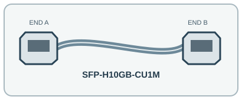

[ INDIVIDUAL COMPONENT // PASSIVE DIRECT-ATTACH COPPER CABLE ]
Cisco SFP-H10GB-CU1M 1 m 10G SFP+ Direct-Attach Cable
A short passive twinax DAC with SFP+ interfaces integrated at both ends, designed for 10 Gb/s rack-level links.

IDENTIFICATION: Exact manufacturer model/SKU: Cisco SFP-H10GB-CU1M. Connector fit alone does not establish electrical, optical, protocol or platform compatibility.
Product specifications
| Manufacturer model / SKU | Cisco SFP-H10GB-CU1M |
|---|---|
| Product type | PASSIVE DIRECT-ATTACH COPPER CABLE |
| Connector/end types | SFP+ direct-attach copper transceiver plug → SFP+ direct-attach copper transceiver plug; integrated ends, not separate LC optics. |
| Fiber grade / Ethernet category | 30 AWG passive twinax copper assembly (not fiber). |
| Length | 1 m. |
| Bend radius and shielding | Passive 30 AWG twinax cable assembly with integrated SFP+ ends; Cisco does not specify the cable shield-layer construction or numeric minimum bend radius in the cited data sheet. Do not kink or sharply bend the twinax. |
| Speed / distance limits | 10 Gb/s SFP+ direct-attach connection over the cable’s specified 1 m reach; not an optical 10GBASE-SR/LR link and not intended for longer channel runs. Maximum physical run is the cable assembly length of 1 m; Cisco-supported platforms/port settings govern operation. |
| Compatibility | Cisco platforms explicitly supported by the Cisco Optics-to-Device Compatibility Matrix for SKU SFP-H10GB-CU1M. Check the exact switch/router model, software release, and port support; a mechanically fitting SFP+ cage alone does not guarantee compatibility. |
Compatibility and handling
Cisco platforms explicitly supported by the Cisco Optics-to-Device Compatibility Matrix for SKU SFP-H10GB-CU1M. Check the exact switch/router model, software release, and port support; a mechanically fitting SFP+ cage alone does not guarantee compatibility.
Bend-radius note: Cisco’s cited public material does not publish a numeric minimum bend radius for this SKU; maintain a gentle curve and do not compress or kink the twinax.
Shielding / jacket: Passive twinax copper cable assembly with SFP+ ends integrated at both ends; the cited Cisco data sheet does not itemize foil/braid shield construction.
Inspect the jacket, strain relief, latch and end faces before use. For optical assemblies, keep dust caps in place and never look into a live fiber. For copper/active-end assemblies, avoid tight bends and cable crushing; validate PoE and device compatibility from the relevant port documentation.
Manufacturer sources and technical references
- Cisco — 10GBASE SFP+ Modules Data SheetManufacturer data sheet for passive SFP+ Twinax product family, rates and cable variants.
- Cisco — Optics-to-Device Compatibility Matrix (pre-filtered SKU)Current manufacturer compatibility lookup for SFP-H10GB-CU1M.
Manufacturer sources are HTTPS. Limits quoted here are link/application limits: the installed cable channel, transceivers, connectors, port support and installation quality determine actual service. Confirm model revision and regional documentation before deployment.